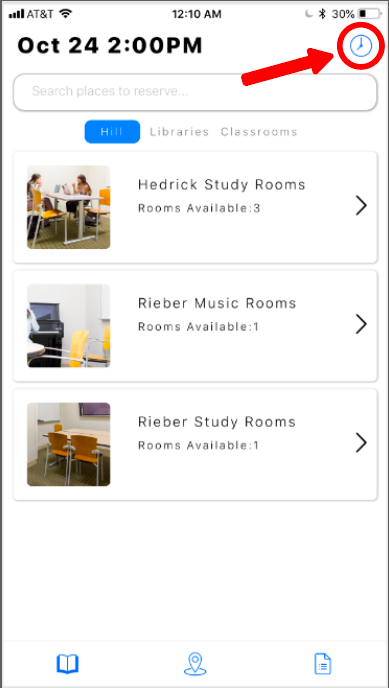
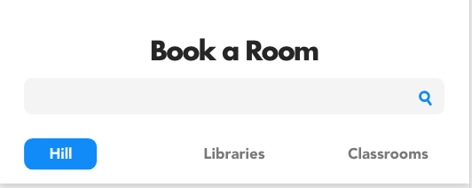
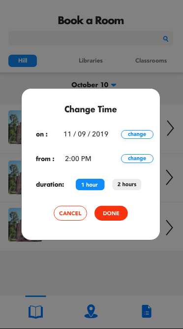

In October 2019, I had the privilege of joining one of UCLA DevX’s projects, StudyB (previously StudySmart), that worked on an app for UCLA students to book study rooms, discover new study spots, and access the location and information regarding all study spots on campus. The app was already almost 2 years in the making, and this quarter I had the opportunity to join as the team’s designer to improve the app's experience in time for the product's launch in December 2019.
Dev: Aashita Patwari, Andy Zeff, Anurang Bhuta, Arihant Jain, Arnav Garg, Aseem Sane, Benjamin He, Bradley Mont, Brendon Ng, Brain Chan, Matthew Pineda, Matthew Wang, Shirly Fang
Marketing:
Sanjana Sachdeva
Design: Me
As the designer, I was responsible for performing user-testing of the current UI and making improvements to the app based on data gathered from users. I also designed a new logo for the app's rebranding. After launching our product in December, I designed marketing graphics for posters and screen displays that would be distributed across campus.
I performed user-testing on the app's current version and gathered feedback on the usability. For this test, I gathered participants within our target demographic (UCLA students ages 18 - 25) and asked them to answer questions and complete a series of tasks. I gathered data based on the time to complete the task, user comments while completing the tasks, and visual feedback from users. From the data, I was able to direct the team’s attention to our biggest pain-points and the most pressing issues to address and resolve before our hard launch in the coming December. The biggest takeaway was regarding confusion in changing room-booking times.
The biggest pain point for users in the current UI was that they had difficulty changing the booking date and time for rooms (ex: booking a room for tomorrow at 2pm instead of the default of booking it on the current day for the upcoming hour). Majority of users would glance past the icon that would take them to the desired destination to do so and would instead tap around other tabs in the app to look for this feature before eventually arriving back at the original page and seeing it in the top right. This scheduling feature is a key task of the app, and cross all users tested, the time taken to perform this task was rather long and difficult, negatively effecting the app's usability.

To resolve this issue, I redesigned the time-changing experience by grouping the date and time near the center of the page and added a button that takes users to a pop-up to change the date and time. *Note that the overall UI is a bit different; I will touch on that a little farther down.
In addition to these usability modifications, also created a new look for the app for the long term. I wanted to make slight changes to the layout for a clearer visual heirarchy and incorporate UI trends to make the app suitable for our young-adult demographic. To opt for a more modern feel, I went for “Futura” font and stacked cells for a clean and minimalistic look.
BEFORE & AFTER:
Shown above is the final version of the redesign; however, I arrived at that version after implementing feedback from my team and peers. After presenting the first version of my redesign to our engineering manager, she communicated with me that there are limitations on the frontend side and some aspects of my design that would be either too difficult to implement or would take too much time and could not be prioritized over other tasks until next quarter. Based on the limitations she presented, I made changes to the designs accordingly to best fit our realistic goals for the hard-launch in December. A few of the changes included:
1) Extending the “search” bar: a fully extended search bar was simpler to code and consistent with the current design, allowing the engineering team to transition more easily.
BEFORE:
AFTER:

2) Removing the calendar design and time-change features and making it similar to the original design. Based on the current code, the time and date selection, the design would be difficult to alter given time constraints.
Original:
Version 1: (Long Term Design)
Version 2: (Short Term Design)

Aside from the engineering manager, I also received feedback on the design from the product manager and my design peers. Amongst the feedback included removing the dark grey box around unused tabs for “hill”, “libraries”, and “classroom” and evening out the spacing
BEFORE:
AFTER:
This project was my first experience working with an entire team. Since I had started pursing design only 3 months before joining, the bulk of my experience designing was from personal projects. Through this project, I learned a lot about communication and also learned a lot regarding the engineering side of the project. I gained a lot of insight to engineering concerns to consider when designing and learned how to communicate my ideas thoroughly to the team. I'm very grateful to have had this opportunity to better understand the how to efficiently work with engineering early on in my design journey and it is something, and the conversations I was able to have with the team regarding issues, concerns, and details have been valuable in shaping my mindset when problem solving and valuable to my growth as a designer.